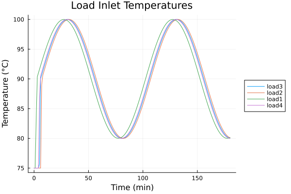
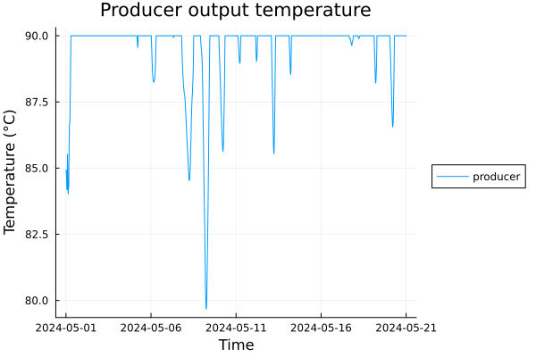

Simulation
This page describes how to run simulations with DHNetworkSimulator and how to interpret the results.
The simulation follows a quasi-dynamic approach:
- Hydraulics are treated as steady state at each time step (mass flow distribution updates “instantly”).
- Thermal dynamics are simulated by advecting discrete plugs of water through pipes.
For details of the plug model, see Plug method.
Run simulation: run_simulation
The main function is run_simulation(network, sim_time, policy; ...).
At a high level, for each step it:
- calls
policy(t, Tₐ, T_back)to get producer setpoints (ProducerOutput), - computes steady-state mass flows (
steady_state_hydronynamics!), - propagates plugs forward (supply), applies load consumption, then propagates plugs backward (return),
- records temperatures / flows / powers into a
SimulationResults.
run_simulation calls check_network! before the first step. You do not need to call it manually as long as you constructed a valid directed tree with one producer and load leaves.
DHNetworkSimulator.run_simulation — Function
Run a quasi-dynamic simulation of a district heating network.
run_simulation(network, sim_time, policy; T0_f=60.0, T0_b=25.0, ambient_temperature=nothing)This is the main entry point for time stepping.
REPEAT for N time steps:
- computes a steady-state hydraulic solution (mass flow distribution),
- advances thermal dynamics using the plug-flow method:
- forward/supply advection producer → loads,
- heat consumption at loads,
- backward/return advection loads → producer,
- heat losses to ambient.
See Plug method for the underlying model.
Output
SimulationResultsstruct containing time series of temperatures, flows, and powers for all nodes and edges.
Arguments
network::Network: prepared network (producer/load nodes identified, pipes attached).sim_time: equally spaced time vector.Vector{Float64}: time in seconds.Vector{DateTime}: timestamps (Δt is interpreted in seconds).
policy::Function: callback returningProducerOutput.- Signature:
policy(t, Tₐ, T_back)::ProducerOutput Tₐis ambient temperature at timetornothing.T_backis the return temperature entering the producer (in previous time stepk-1).
- Signature:
Keyword Arguments
T0_f: initial temperature forward part of the network (producer → loads) (°C).T0_b: initial temperature in backward part of the network (loads → producer) (°C).ambient_temperature: optionalVector{Float64}of ambient (outdoor/atmospheric) temperatures (°C), length must matchsim_time.
Returns
SimulationResults: time series of temperatures, flows, and powers.
Notes
- The network structure is validated once at the start via
check_network!. - Time steps must be equally spaced.
Example of constant policy:
function policy(t, Tₐ, T_back)
return ProducerOutput(mass_flow=15.0, temperature=90.0)
endExample of variable policy
function policy(t, Tₐ, T_back)
T = 90 + 10*sin(2π*t/(24*3600)) # period of 24 hours
return ProducerOutput(mass_flow=15.0, temperature=T)
endProducer setpoint
DHNetworkSimulator.ProducerOutput — Type
Control input returned by a simulation policy.
ProducerOutput represents the producer setpoints for one time step.
struct ProducerOutput
mass_flow::Float64
temperature::Float64
endFields
mass_flow: total mass flow injected into the network in kg/s.temperature: producer outlet (supply) temperature in °C.
Usage
The policy passed to run_simulation must return a ProducerOutput:
function policy(t, Tₐ, T_back)
return ProducerOutput(mass_flow=15.0, temperature=90.0)
endSimulation logs:
Simulation logs data in struct SimulationResults.
DHNetworkSimulator.SimulationResults — Type
Results of a simulation run.
SimulationResults stores the time series produced by run_simulation.
struct SimulationResults
time::Union{Vector{Float64}, Vector{DateTime}}
mass_flow_load::Matrix{Float64}
mass_flow_producer::Vector{Float64}
T_load_in::Matrix{Float64}
T_load_out::Matrix{Float64}
T_producer_in::Vector{Float64}
T_producer_out::Vector{Float64}
power_load::Matrix{Float64}
power_producer::Vector{Float64}
load_labels::Dict{String, Int}
endFields
time: simulation time vector.Vector{Float64}: time in seconds.Vector{DateTime}: absolute timestamps.
mass_flow_load: load mass flows in kg/s. SizeN × nloads.mass_flow_producer: producer mass flow in kg/s. LengthN.T_load_in: temperature entering each load (supply side) in °C. SizeN × nloads.T_load_out: temperature leaving each load (return side) in °C. SizeN × nloads.T_producer_in: return temperature entering the producer in °C. LengthN.T_producer_out: supply temperature leaving the producer in °C. LengthN.power_load: load power consumption in kW. SizeN × nloads.power_producer: producer power output in MW (computed from mass flow and ΔT). LengthN-1.load_labels: mapping from load label to column index used in the*_loadmatrices.
Indexing
Convenience accessors are provided:
sr[:time]returns the time vector.sr[:load_labels]returns the load labels.sr[:load_labels_dict]returns the label→column dictionary.sr["L1", :T_load_in]returns the time series for that load L1 (a vector).
Notes
- All matrices are organized as
(time step, load index). power_producerhas lengthN-1because the producer heats the water that entered in in previous! time step.
Visualization of SimulationResults
SimulationResults can be easily displayed using function plot_simulation_results.
DHNetworkSimulator.plot_simulation_results — Function
Plot time series from SimulationResults.
plot_simulation_results is a small helper around Plots.jl that plots one physical variable either:
- for selected load labels, or
- for the producer (for producer-only variables).
plot_simulation_results(sr::SimulationResults, physical_var::Symbol; kwargs...)
plot_simulation_results(sr::SimulationResults, labels::Vector{String}, physical_var::Symbol; kwargs...)
plot_simulation_results(plot::Plots.Plot{Plots.GRBackend}, sr::SimulationResults, physical_var::Symbol; kwargs...)
plot_simulation_results(plot::Plots.Plot{Plots.GRBackend}, sr::SimulationResults, labels::Vector{String}, physical_var::Symbol; kwargs...)Arguments
sr::SimulationResults: simulation output fromrun_simulation.labels::Vector{String}: load labels to include in plot (only used for load variables), if not provided, all load labels are plotted.physical_var::Symbol: what values to plot. Supported options are:- temperatures:
:T_load_in,:T_load_out,:T_producer_in,:T_producer_out - mass flows:
:mass_flow_load,:mass_flow_producer - powers:
:power_load,:power_producer
- temperatures:
plot::Plots.Plot{Plots.GRBackend}: an existing plot to add lines to, if not provided, a new plot is created.
Keyword Arguments
kwargs...: forwarded toPlots.plot!(e.g.linewidth,color,legend, ...).
Returns
- The
Plots.Plotobject.
Notes
- If
sr[:time]isVector{Float64}, the x-axis is converted from seconds to minutes. :power_producerhas lengthN-1and is plotted againsttime[1:end-1].- When plotting producer variables, the line style defaults to dashed (unless you override
linestyle).
Examples
sr = run_simulation(network, t, policy)
plot_simulation_results(sr, :T_load_in)
plot_simulation_results(sr, ["L1", "L2"], :mass_flow_load)
plot_simulation_results(sr, :power_producer)Minimal workflow (end-to-end)
The typical workflow is:
- build a
Network(see Network), - attach node/edge parameters,
- define
sim_timeandpolicy, (optionally get also measurements of temperature) - call
run_simulation, - visualize time series via
plot_simulation_results.
Examples
Example 1: sinusoidal temperature
using DHNetworkSimulator
# network = ... build/parameterize a valid Network ...
t = float.(collect(range(0, stop=3*60*60, step=60))) # simulate for three hours with 1 min time step
# sinusoidal mass flow and temperature
function policy(t, Tₐ, T_back)
mass_flow = 15.0
temp = 90 + 10*sin(2π*t/(100*60)) # period of 100 minutes, oscillation between 80 and 100 °C
return ProducerOutput(mass_flow=mass_flow, temperature=temp)
end
results = run_simulation(network, t, policy; T0_f=75.0, T0_b=60.0)
plot_simulation_results(results, :T_load_in; title="Load Inlet Temperatures")
Example 1: sinusoidal temperature on input
Example 2: varying outdoor temperature
In real world there is time varying outdoor temperature, which has impact on the dissipation of energy during transport (if we have good isolation, not so much). Also, consumers consume more energy, when it's cold outside.
We have a measurement of real outdoor temperature in May 2024, lets try use it!
Also, our power plans surely has some limits, let's specify the power output to be 4 MW.
time_interval = [DateTime(2024, 5, 1), DateTime(2024, 5, 21)]
Tₐ = TSFrames.subset(outdoor_temperature_ts, time_interval...) # select only relevant interval
Tₐ_vec = Tₐ[:, :T_a_avg] # convert TSFrame to vector of outdoor temperatures for each time step
t = index(Tₐ) # get time vector in DateTime format
producer_power = 4_000_000.0 # 4 MW
c_water = 4186.0 # J/(kg*K)
function policy(t, Tₐ, T_back)
mass_flow = 80.0 # constant mass flow of 80 kg/s
# P = (T2-T1) * mass_flow * water_specific_heat
temp = producer_power / (mass_flow * c_water) + T_back
return ProducerOutput(mass_flow=mass_flow, temperature=temp)
end
results = run_simulation(network, t, policy; T0_f=75.0, T0_b=70.0, ambient_temperature=Tₐ_vec)
plot_simulation_results(results, :T_load_out; title="Return temperatures on load side")
Example 2: varying outdoor temperature
Example 3: control the output temperature with constrained power
It's easy to say "let's just produce water of 90°C". To do that, we have to heat up the water and for that to happen, we must give the water considerable amount of energy. In real world, producers have some upper limits of energy they can deliver per second.
Let's model that!
# ... t, Tₐ_vec same as in previous example... #
T_target = 90 # our target temperature
Pwr_max = 5_000_000.0 # maximal power output 5 MW
function policy(t, Tₐ, T_back)
mass_flow = 80.0
P_target = (T_target - T_back) * mass_flow * c_water # power needed to reach T_target
P = min(P_target, Pwr_max)
temp = P / (mass_flow * c_water) + T_back
return ProducerOutput(mass_flow=mass_flow, temperature=temp)
end
results = run_simulation(network, t, policy; T0_f=75.0, T0_b=70.0, ambient_temperature=Tₐ_vec)
plot_simulation_results(results, :T_producer_out; title="Producer output temperature", linestyle=:solid)
plot_simulation_results(results, :power_load)
Example 3: Producer is able to control temperature to 90°C most of the time.

Example 3: Power consumption of loads depend on temperature, we see, that in some intervals, it sums up so much, that the total power consumption is higher that power production and water gets colder.